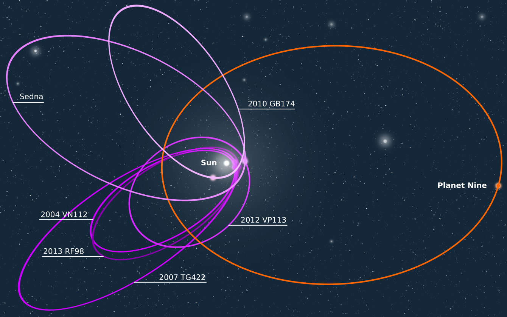

There are celestial objects at the edge of our solar system that have peculiar orbits—they're all oriented the same way, with very similar eccentricities and orbital angles. Such orbits are rarely formed naturally, so finding multiple objects following the same path is highly improbable. What caused these strange orbits? Caltech astronomers Konstantin Batygin and Mike Brown set out to answer that question.
Something must have been pulling these objects to the outer rim of the solar system. They posited that it was a ninth planet, incredibly far from the Sun on an eccentric, tilted orbit. This would cause objects to be grouped into the peculiar orbits we've found beyond Neptune. If this ninth planet really followed such an orbit, it would take tens of thousands of years to complete one orbit around the Sun.
In addition, we've discovered detached objects orbiting the Sun from implausibly distant locations. What makes this so peculiar is that objects beyond Neptune should be influenced by Neptune's gravity and scattered into the Kuiper Belt—yet these detached objects aren't. So what pushed them so far out? Batygin and Brown proposed that it must be a ninth planet.
All of this was pure postulation until Batygin and Brown ran two supercomputer simulations of the solar system spanning billions of years—one with a ninth planet and one without. They discovered that the simulation with a ninth planet looked exactly like our own and produced the orbits I discussed earlier. The simulation without it lacked those orbits. So there, a ninth planet exists, right? Not so fast, bucko—we still haven't observed a ninth planet in the sky, but that's mostly due to our technological limitations. We don't yet have the telescopes or observing time to detect such a faint, distant object on an orbit that takes tens of thousands of years. But with new observatories like Vera Rubin, we might just find this elusive planet.
If we really do find this planet, Pluto will be officially replaced (and maybe even forgotten) by a cooler celestial object that actually fits our planet classification. Pluto will stop being the demoted planet and become that one object in the Kuiper Belt that got the pitiful label of “dwarf planet,” forever outshined by a bigger and better planet.
Maybe I'm going a little too hard on Pluto, but honestly, he had it coming.